"I promise to become the best possible person I can be. With Honesty in my heart, Confidence in my mind and Strength in my body. I will achieve excellence and share it with others. My goal is Black Belt Excellence. My quest is Personal Best."
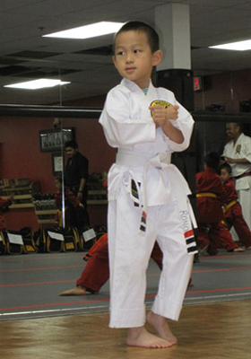
Ronald started his karate class on May 9th, 2011. On July 30th, he was ready for grading to yellow belt.
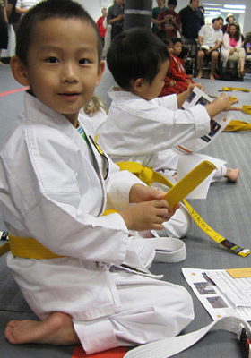
He was so happy to move on to the next level. After white Gi with white belt, it's red Gi with yellow belt.
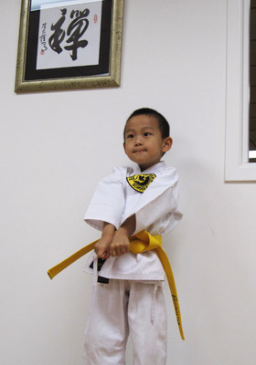
He gave a karate pose for photograph.
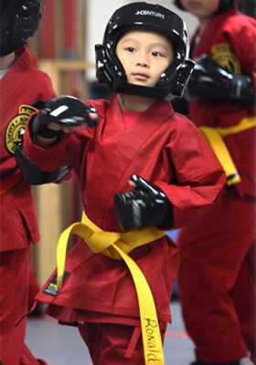
Karate Gi is the Japanese name for the karate training uniform. Ronald also got his helmet, gloves, and shoes.
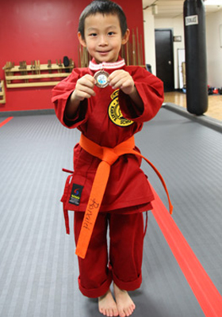
On January 28th, 2012 he graded to orange belt and won the best player medal. Great work Ronald!
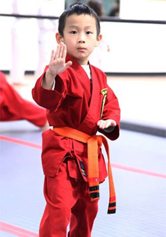
On April 28th, 2012 Ronald was tested for grading to green belt.
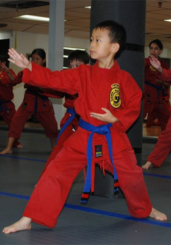
Then about two month later, on September 29th, 2012 Ronald was tested for his blue advanced belt.
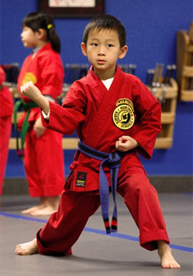
On January 26th 2013 Ronald was ready for purple belt. His Sansei said Ronald's Kata had improved a lot.
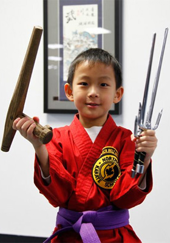
Starting from purple belt, Ronald was going to practice with weapons. He was thrilled. He couldn't wait to take out weapons and played with them.
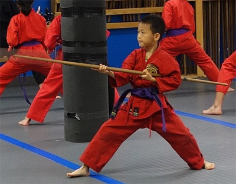
Ronald graded to purple advanced belt on July 12, - the last day of his first 2013 Karate summer camp.
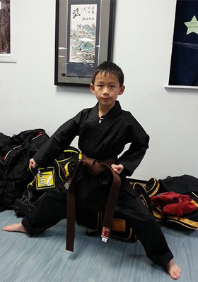
Ronald graded to brown belt on Dec 3, 2013. He finally put on his black Gi. Proud of Ronald!
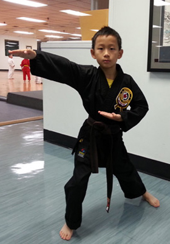
More than half a year later, Ronald graded to brown advanced belt on July 26, 2014. It took much longer time for him to grade to a higher level. He was very excited about his achievement.